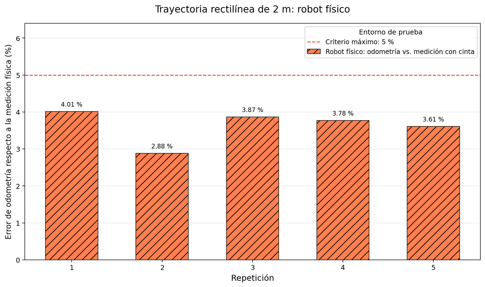
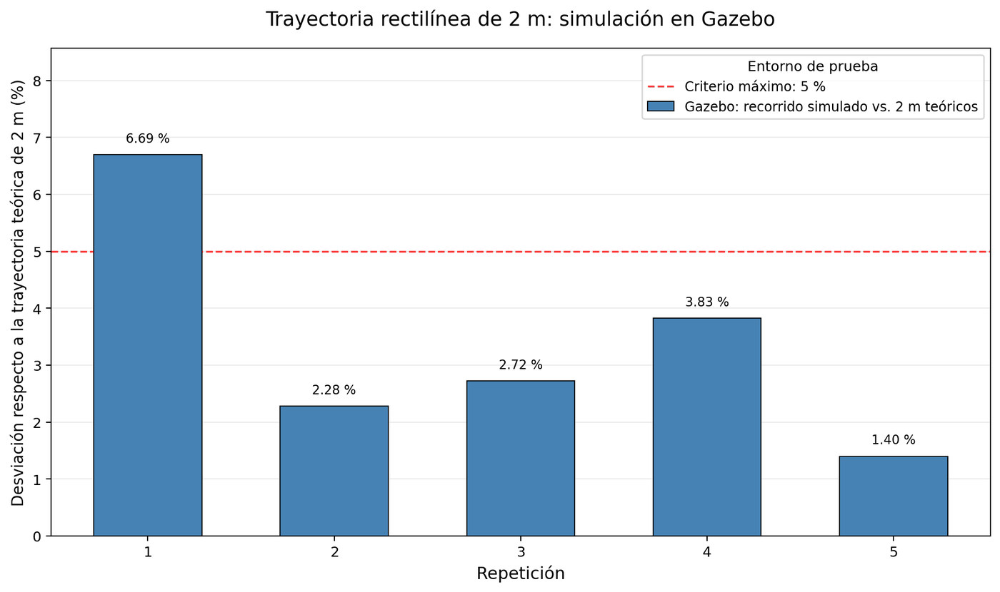
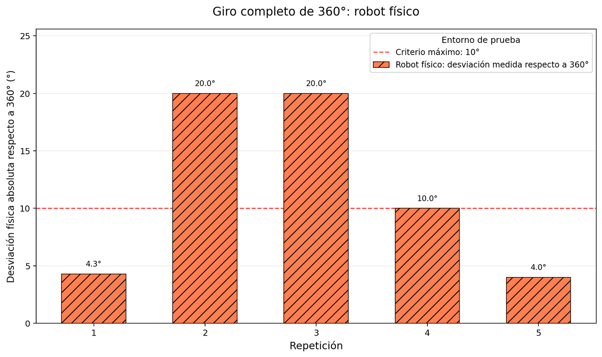
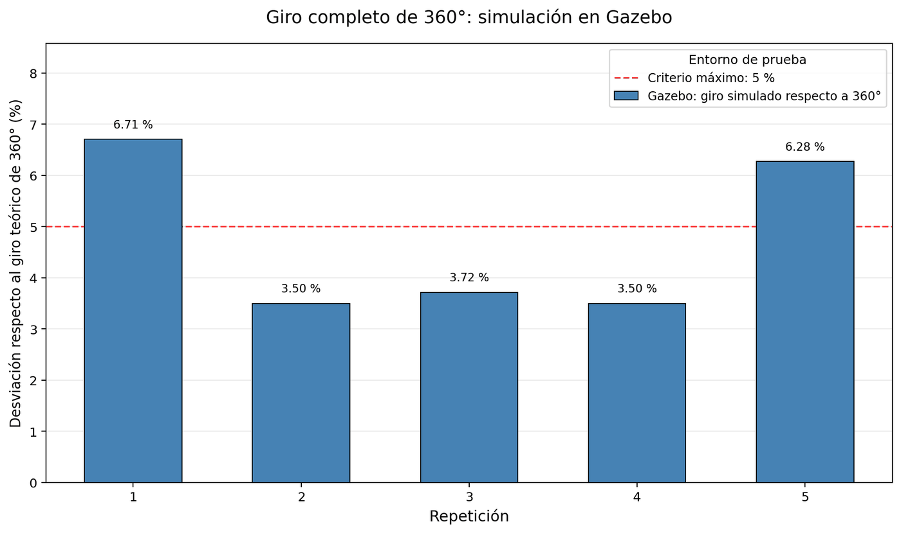

Un robot con dos ruedas y sin volante puede avanzar, doblar y girar sobre sí mismo. Saber cuánto avanzó es otro problema. Este tema explica la tracción diferencial, cómo se cuenta el giro de las ruedas y qué tan confiable resultó esa cuenta en el robot real.
NivelLectura

Error de odometría en cinco rectas de 2 m del robot real, medido con cinta métrica. Fig. 5.2 b de la tesis.
Contar pulsos para saber cuánto avanzó
El robot dobla haciendo que una rueda gire más rápido que la otra. Para saber cuánto avanzó cuenta los pulsos de los encoders, una técnica llamada odometría, que es simple y rápida pero acumula error con cada metro. En el robot real esa cuenta se equivocó un 3,63 % en una recta de 2 m, con un error tan parejo que revela un sesgo que se puede corregir.
3,63 %error medio de la odometría frente a una cinta métrica
0,44 %dispersión entre repeticiones, la firma de un sesgo sistemático
1980pulsos del encoder por vuelta de rueda
5repeticiones por ensayo, en simulación y en el robot real
La tracción diferencial
Un robot diferencial tiene dos ruedas motrices, cada una con su motor, y un apoyo pasivo como una rueda loca. No tiene volante. Dobla haciendo que una rueda gire más rápido que la otra, igual que un tanque o una silla de ruedas. Es la configuración más común en robots móviles pequeños por su simpleza mecánica y porque puede girar en su lugar, algo que un auto no puede hacer 2.
Prueba con dos velocidades de rueda
Interactivo
Mueve los deslizadores o elige un caso. El dibujo usa el radio de rueda y la separación reales del robot.
Simulador de cinemática diferencial. Necesita JavaScript.
Dos reglas lo resumen todo. La velocidad del robot es el promedio de las velocidades de sus ruedas. Y la rapidez con que gira es la diferencia entre ambas ruedas dividida por la distancia que las separa, 18,8 cm en este robot 1. Por eso una diferencia pequeña entre ruedas produce una curva amplia, y una diferencia grande, una curva cerrada.
El controlador diferencial de ROS 2 hace la cuenta al revés. Recibe una velocidad y un giro para el robot y calcula cuánto debe girar cada rueda. En el robot real limita la velocidad a 0,13 m/s y el giro a 0,35 rad/s, valores prudentes para un recinto pequeño.
Para el curioso: las fórmulas
Con radio de rueda r, separación entre ruedas b y velocidades angulares de rueda ωR y ωL:
v = (r / 2) · (ωR + ωL) ω = (r / b) · (ωR − ωL)
La relación inversa, la que usa el controlador diferencial para repartir una orden entre las ruedas:
ωR = v / r + (b / 2r) · ω ωL = v / r − (b / 2r) · ω
Para seguir la posición se suma cada pequeño avance en la dirección en que mira el robot, en intervalos cortos de tiempo T:
x nuevo = x + T · v · cos θ y nuevo = y + T · v · sin θ θ nuevo = θ + T · ω
Ecuaciones 3.3 a 3.8 de la tesis, según Corke 2 y Ferreira y otros 3.
Encoders: contar el giro de cada rueda
Un encoder incremental convierte el giro de un eje en pulsos eléctricos. En los de efecto Hall, como los de estos motores, un imán con varios polos gira junto al eje del motor y dos sensores producen dos señales desfasadas un cuarto de ciclo, llamadas canales en cuadratura. El orden en que cambian dice el sentido de giro, y contar todos los cambios de ambos canales multiplica por cuatro la resolución 1.
Canales A y B, y el sentido de giro
Interactivo
Cambia el sentido de giro y observa cómo se invierte el orden entre A y B.
Simulador de encoder de cuadratura. Necesita JavaScript.
Como el sensor está en el eje del motor y la rueda gira mucho más lento por la caja reductora, cada vuelta de rueda produce cientos de pulsos. En teoría, la resolución se calcula multiplicando los pulsos por vuelta del motor, el factor cuatro y la reducción. En la práctica conviene medirla, porque las tolerancias mecánicas cambian el número. Giré cada rueda una vuelta completa diez veces y obtuve promedios de 1976 pulsos en la derecha y 1969 en la izquierda. El firmware usa un único valor de 1980, que introduce un error sistemático de 0,20 % y 0,56 % respectivamente 1.
El conteo no ocurre en el ciclo principal del programa. Cada cambio en un canal dispara una interrupción del Arduino, cuya rutina suma o resta en el contador de esa rueda. Así el conteo avanza en paralelo a todo lo demás.
Una animación de cómo un encoder incremental entrega dirección y posición. Útil para ver en movimiento lo que el interactivo muestra en dos canales. Fuente 6
Odometría: saber dónde estás contando pasos
La odometría estima la posición del robot sumando el desplazamiento de sus ruedas 3. Es la misma idea de la navegación por estima que usaban los barcos antes de los satélites, o de caminar con los ojos cerrados contando pasos. Es barata y rápida, pero cada pequeño error se suma al siguiente y la posición estimada se va alejando de la real.
Hay dos tipos de error 2. Los sistemáticos se repiten siempre igual, como un radio de rueda mal calibrado. Los aleatorios cambian de una vez a otra, como el deslizamiento de una rueda sobre la alfombra. La diferencia importa, porque define el remedio. Los primeros se corrigen calibrando. Los segundos solo se acotan con otro sensor.
El cuentakilómetros de un auto hace odometría, y por eso marca distinto si cambias el tamaño de los neumáticos.
El ensayo de la recta de 2 metros
Un script ordenó al robot avanzar a 0,13 m/s durante 15,4 s, el tiempo para recorrer 2 m a esa velocidad, y después lo detuvo. Se repitió cinco veces. En cada repetición registré lo que estimó la odometría y medí con cinta métrica lo que el robot avanzó de verdad 1.
Tres distancias de una misma recta
Datos de la tesis
Promedio de cinco repeticiones en el robot real.
Ordenado 2,000 m. Encoders 1,924 m. Cinta 1,856 m.
De esas tres distancias salen dos cifras que miden cosas distintas, y confundirlas es el error más común al leer este resultado.
Error de seguimiento, 7,18 %
Compara la cinta con lo ordenado. Dice que el robot avanzó menos de lo pedido. Una parte ya la registran los encoders, que marcan 3,8 % menos que los 2 m, y es compatible con el tiempo que tardan las ruedas en acelerar, porque la orden se definió por tiempo y no por posición.
Error odométrico, 3,63 %
Compara los encoders con la cinta. Dice que el robot cree haber avanzado unos 7 cm más de lo real. Esta es la cifra que describe la calidad de la odometría.
Lo que revela la dispersión
El error odométrico varió solo 0,44 % entre repeticiones. Un error tan parejo es la firma de un sesgo sistemático, compatible con un radio efectivo de rueda distinto del configurado o con un deslizamiento persistente.
No separé esas causas con ensayos independientes, pero sí puedo descartar una. El valor de 1980 pulsos por vuelta es mayor que los promedios medidos, así que haría que la odometría subestimara la distancia, no que la sobreestimara 1. La causa tiene que estar en otra parte.
Robot real: odometría frente a la cinta métrica. Fig. 5.2 b de la tesis.

Simulación: odometría frente a los 2 m teóricos. No mide lo mismo que la figura de la izquierda. Fig. 5.2 a de la tesis.
Las dos figuras se parecen, pero no se comparan entre sí. En simulación la pose verdadera de Gazebo no quedó registrada y la distancia salió de la propia odometría, así que el 3,39 % simulado compara la odometría con lo ordenado, no con una medición externa 1. Es un buen ejemplo de por qué una tabla debe decir siempre contra qué se mide cada número.
Prueba
Odometría (m)
Cinta (m)
Error odométrico
1
1,920
1,846
4,01 %
2
1,922
1,868
2,88 %
3
1,923
1,851
3,87 %
4
1,926
1,856
3,78 %
5
1,928
1,861
3,61 %
Media
1,924
1,856
3,63 %
Tabla A6.2 de la tesis. Distancia ordenada, 2,00 m en todas las pruebas.
El ensayo de giro y lo que enseña su diseño
Para el giro, un script pidió 0,4 rad/s durante el tiempo que tomaría una vuelta completa a esa velocidad, unos 15,7 s. El detalle es que el controlador diferencial limita el giro a 0,35 rad/s. Con ese límite aplicado de forma ideal, el robot llegaría a 315°, no a 360° 1.
Cinco giros medidos frente a 315° y 360°
Datos de la tesis
Giros medidos de 355,7°, 340°, 380°, 370° y 356°.
Todos los giros superaron los 315°, tanto en simulación, entre 335,9° y 347,4°, como en el robot real, entre 340° y 380°. Eso indica que la velocidad efectiva no quedó limitada de forma ideal, y la causa no se determinó. Por eso informo una desviación respecto de 360° nominales, de 3,24 % en el robot real y 4,74 % en simulación, y no un error de odometría angular 1.

Robot real: desviación física medida, con sobregiros y subgiros. Fig. 5.2 d de la tesis.

Simulación: giro acumulado de la odometría frente a 360°. Fig. 5.2 c de la tesis.
La lección vale para cualquier ensayo. Tiene que medir lo que uno cree que mide. Si la orden choca con un límite del sistema, el resultado mezcla el error que se quería estudiar con el efecto del límite. La mejora propuesta es un giro controlado hasta un ángulo fijo, que entregaría un error angular directo. Mientras tanto, los registros de cada prueba conservan la odometría y permiten revisar la velocidad aplicada sin repetir el ensayo.
La corrida en que la odometría avanzó y el robot no
De las seis ejecuciones de exploración, una se excluyó. Durante 5,09 minutos el explorador envió 14 metas y la odometría sumó 3,851 m, pero el robot no se movió de su posición inicial. La causa no se determinó 1.
Las señales de esa corrida
Datos de la tesis
Encoders 3,851 m. Mapa sin crecimiento. Posición real sin cambio.
El episodio muestra el límite de fondo de los encoders. Miden el giro de las ruedas, no el avance del robot, así que unas ruedas que giran sin avanzar suman distancia igual. El láser sí tenía la señal, porque si el robot no se mueve el mapa no crece. Por la misma razón, en las otras cinco corridas el movimiento queda respaldado por una evidencia independiente de los encoders, que es el crecimiento del mapa. Una cinta métrica tampoco es la verdad absoluta, pero es una referencia externa, y eso es lo que importa para medir un sesgo de unos 7 cm.
Cómo se mejora una odometría
Un sesgo tan parejo como el de este robot es una buena noticia, porque se puede calibrar. El método clásico para robots diferenciales es UMBmark, propuesto por Borenstein y Feng 4. El robot recorre un cuadrado en sentido horario y otro en antihorario, y los errores al volver al punto de partida permiten separar las dos causas sistemáticas dominantes, ruedas de diámetro distinto y una separación efectiva entre ruedas mal estimada, para corregirlas en el software. No lo apliqué en este trabajo, y es una mejora barata para quien construya un robot parecido.
Las otras dos mejoras agregan información. Una unidad inercial mide el giro sin depender de las ruedas y se puede fusionar con la odometría mediante el paquete robot_localization, lo que propongo como trabajo futuro. Y el láser, a través de SLAM, ya corrige la deriva mientras se construye el mapa, como se explica en Ver y mapear.
En el mundo real
La navegación por estima es más antigua que los robots y sigue presente en máquinas de todos los tamaños.
La Luna · 1971 y 1972
El vehículo lunar del programa Apollo
Su sistema de navegación registraba de forma continua la dirección con un giroscopio y la distancia con odómetros en las ruedas, y un computador calculaba el rumbo y la distancia de regreso al módulo lunar.
Sumaba un sensor de giro a la odometría de ruedas, la misma mejora que propongo con una unidad inercial.
Muchos modelos llevan una torre con un láser giratorio que mide la casa y guarda un plano, sobre el cual el robot se ubica en cada limpieza en lugar de confiar solo en lo que avanzaron sus ruedas.
El láser corrige la deriva de la odometría, igual que SLAM en Ver y mapear.
TesisValderas Neculqueo, S. (2026). Navegación y exploración autónoma de interiores utilizando un robot móvil de tracción diferencial. UTEM. Secciones 3.3.2, 3.4, 4.3.3 y 5.1, Tablas 4.3, 5.1 y 5.2, y Anexos 4.1, 6 y 7.
LibroCorke, P. (2023). Robotics, Vision and Control: Fundamental Algorithms in Python (3.ª ed.). Springer. Secciones 4.1 y 6.1. doi.org/10.1007/978-3-031-06469-2
ArtículoFerreira, M., Moreira, L. y Lopes, A. (2023). Differential Drive Kinematics and Odometry for a Mobile Robot Using TwinCAT. Electronic Research Archive, 31(4). doi.org/10.3934/era.2023092
ArtículoBorenstein, J. y Feng, L. (1996). Measurement and correction of systematic odometry errors in mobile robots. IEEE Transactions on Robotics and Automation, 12(6). doi.org/10.1109/70.544770
NASANASA Space Science Data Coordinated Archive. The Apollo Lunar Roving Vehicle. nssdc.gsfc.nasa.gov